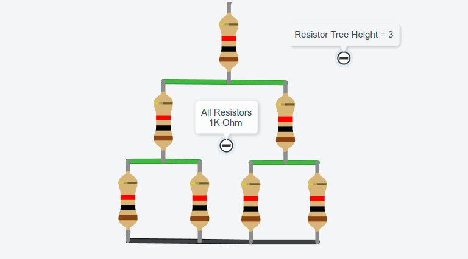
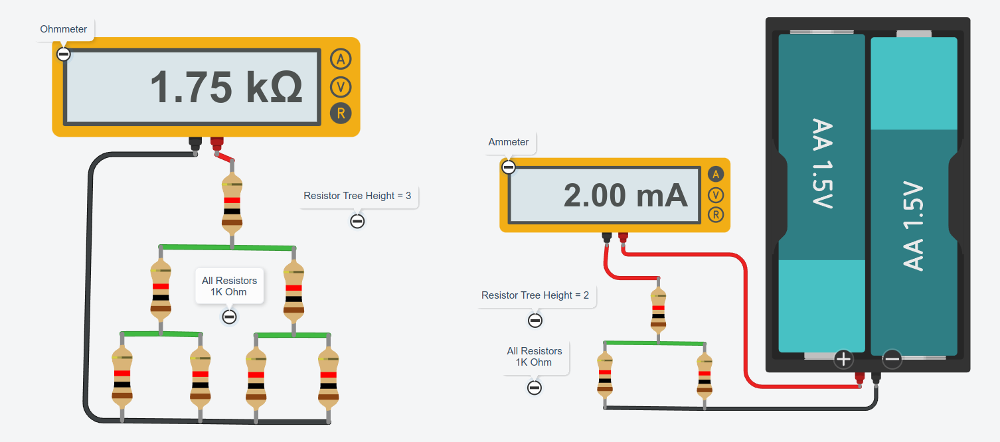
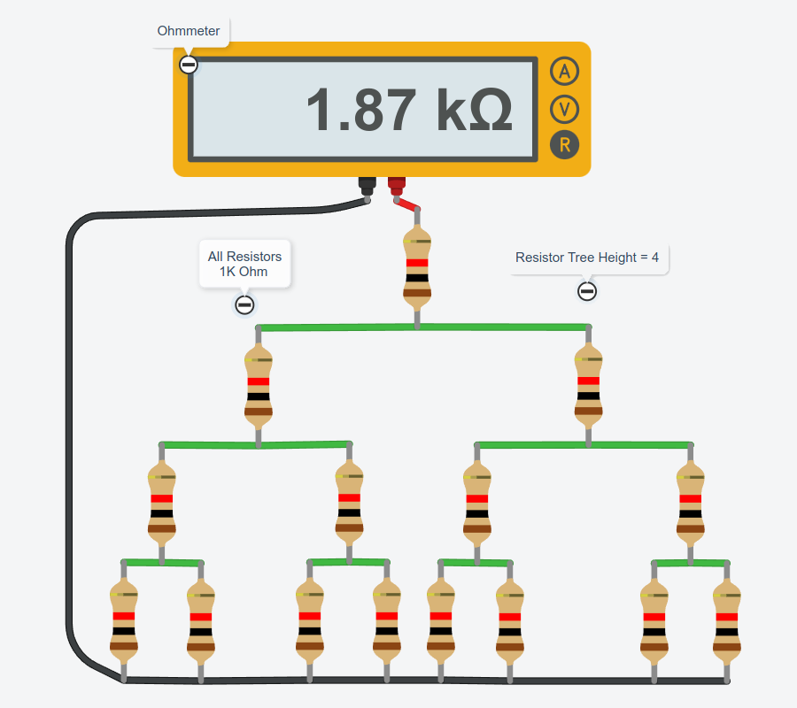
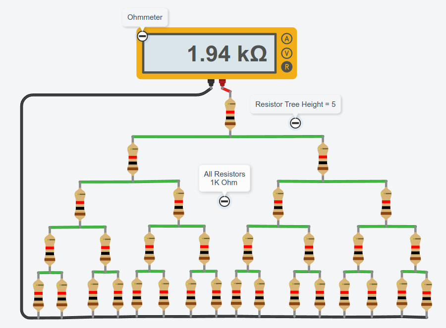
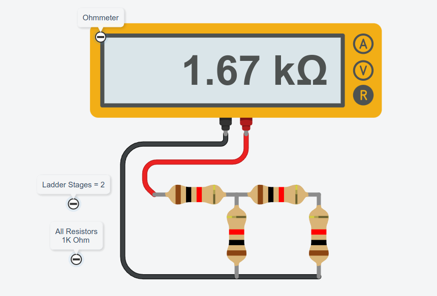
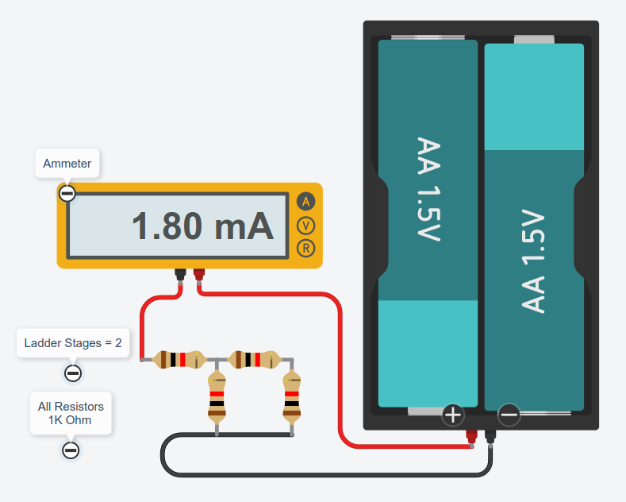
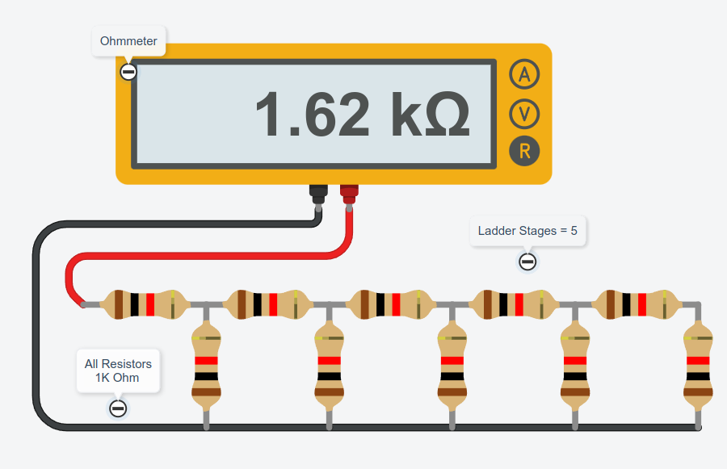

โครงข่ายของตัวต้านทานและการหาค่าความต้านทานรวม#
Keywords: Circuit Simulation, AUTODESK Tinkercad, Resistor Network, Ladder Diagram, Binary Tree Diagram, Recurrence Equations
▷ กิจกรรมการเรียนรู้วงจรไฟฟ้าโดยใช้ตัวต้านทาน#
บทความนี้นำเสนอกิจกรรมการเรียนรู้ที่ใช้ตัวต้านทานหลายตัว และทุกตัวมีค่าเท่ากัน นำมาต่อวงจรเข้าด้วยกัน โดยสร้างเป็นโครงข่ายของตัวต้านทาน (Resistor Networks) ตามรูปแบบที่กำหนดไว้ แบ่งออกเป็น 2 รูปแบบ คือ
- แผนภูมิต้นไม้แบบทวิภาค (Binary Tree)
- แผนภูมิบันได (Ladder Structure)
เมื่อได้ต่อวงจรโดยใช้ตัวต้านทานแล้วตามรูปแบบที่ 1 หรือ 2 โจทย์ถัดไปก็คือ การหาความต้านทานรวมระหว่าง 2 จุด ซึ่งถูกกำหนดให้เป็นจุดปลายของโครงข่ายตัวต้านทานดังกล่าว และก็สามารถทำได้หลายวิธี เช่น
- การคำนวณในเชิงทฤษฎี
- การวัดด้วยมัลติมิเตอร์
- การใช้ซอฟต์แวร์ช่วยวิเคราะห์วงจรไฟฟ้า
เนื่องจากว่า รูปแบบการต่อตัวต้านทาน มีลักษณะเฉพาะ และค่าความต้านทานของทุกตัวเท่ากัน ดังนั้นการคำนวณค่าความต้านรวมโดยใช้วิธีเชิงวิเคราะห์ (Analytic Method) จึงทำได้ไม่ยากนัก
แต่ถ้าใช้วิธีการวัด ก็แบ่งเป็น วิธีแรกคือ การจำลองการทำงานของวงจรไฟฟ้าโดยใช้ซอฟต์แวร์ เช่น AUTODESK Tinkercad - Circuits (https://www.tinkercad.com/circuits) ซึ่งเป็น Web App ใช้งานได้ฟรี และเปิดใช้งานด้วยเว็บเบราว์เซอร์ และวิธีที่สองคือ การทดลองวัดปริมาณทางไฟฟ้าด้วยมัลติมิเตอร์
▷ การต่อตัวต้านทานตามรูปแบบ Binary Tree#
ขั้นตอนการต่อตัวต้านทานตามรูปแบบแผนภูมิต้นไม้ทวิภาค มีดังนี้
- เริ่มต้นด้วยตัวต้านทาน 1 ตัว ซึ่งถือว่า เป็นชั้นแรก
- ในชั้นที่สอง ให้นำตัวต้านทานครั้งละ 2 ตัว โดยต่อเข้าที่ปลายด้านล่างของตัวต้านทานตัวแรก ดังนั้นตัวต้านทานที่นำมาต่อเพิ่มแต่ละตัว เป็นกิ่ง (Branches) ที่แยกออกมา 2 กิ่ง
- ในชั้นที่สาม ให้นำตัวต้านทาน 2 ตัว ไปต่อเข้ากับแต่ละกิ่งของชั้นที่สอง และนำมาต่อให้ครบทุกกิ่ง
- ชั้นถัดไปก็ให้ทำในลักษณะเดียวกัน ตามจำนวนชั้นที่ต้องการต่อตัวต้านทาน
- เมื่อได้จำนวนชั้นของตัวต้านทานตามต้องการแล้ว ให้นำปลายด้านล่างสุดของตัวต้านทานแต่ละกิ่งเชื่อมต่อถึงกันทั้งหมด รวมกันเป็นปลายด้านล่าง

รูป: ตัวอย่างการต่อตัวต้านทานตามรูปแบบ Binary Tree และมีความสูงเท่ากับ 3 ชั้น
ถ้าให้ คือ จำนวนชั้น หรือ ความสูงของต้นไม้ทวิภาค จำนวนของตัวต้านทานที่มีอยู่ คือ เช่น จะมีจำนวนของตัวต้านทานเท่ากับ ตัว
คำถาม: จากปลายด้านบนสุดจนถึงปลายด้านล่างมีค่าความต้านทานกี่โอห์ม
▷ การจำลองการต่อตัวต้านทานเป็นโครงข่ายตามรูปแบบ Binary Tree#
รูปต่อไปนี้เป็นตัวอย่างการต่อตัวต้านทานแบบเสมือนจริง โดยใช้ซอฟต์แวร์ AUTODESK Tinkercad และการใช้มัลติมิเตอร์วัดปริมาณทางไฟฟ้า เลือกใช้ค่าความต้านทานคงที่ ทุกตัว
รูปทางซ้ายมือสาธิตการใช้โหมดการวัดเป็น "โอห์มมิเตอร์" (Ohm meter) และรูปทางขวามือสาธิตการใช้โหมดการวัดเป็นแอมมิเตอร์ (Ammeter) โดยมีแหล่งจ่ายไฟ DC คงที่ เช่น 3V จากแบตเตอรี่ (สมมุติว่า แรงดันไฟฟ้าคงที่)
ในกรณีที่วัดปริมาณกระแสไฟฟ้าที่ไหลผ่าน เมื่อมีแหล่งจ่ายเป็นแรงดันไฟฟ้าคงที่ เช่น วัดกระแสได้ประมาณ ดังนั้นจึงได้ค่าความต้านทานรวม ตามกฎของโอห์ม

รูป: การวัดปริมาณทางไฟฟ้าด้วยมัลติมิเตอร์

รูป: การวัดค่าความต้านทานด้วยมัลติมิเตอร์ ตามแผนภูมิต้นไม้ทวิภาคของตัวต้านทาน ความสูง 4 ชั้น

รูป: การวัดค่าความต้านทานด้วยมัลติมิเตอร์ ตามแผนภูมิต้นไม้ทวิภาคของตัวต้านทาน ความสูง 5 ชั้น
จากการจำลองการทำงาน จะเห็นได้ว่า วัดความต้านทานรวม () ระหว่างปลายด้านบนและด้านล่าง ได้ประมาณ สำหรับความสูง 4 ชั้น และประมาณ สำหรับความสูง 5 ชั้น ตามลำดับ
▷ การวิเคราะห์หาค่าความตัวต้านทานรวมของโครงข่าย Binary Tree#
การคำนวณหาค่าความต้านทานรวมสำหรับโครงสร้างแผนภูมิต้นไม้ทวิภาค สามารถใช้หลักการคำนวณตาม "สมการเวียนเกิด" หรือความสัมพันธ์แบบเวียนเกิด (Recurrence Relationship) ได้ดังนี้
- Recursive Case:
- Base Case:
คำถาม: ถ้ามีจำนวนชั้นของโครงข่ายตัวต้านทานแบบ Binary Tree เพิ่มขึ้นไปเรื่อย ๆ แนวโน้มของค่า จะเป็นอย่างไร?
คำตอบ: จะได้ค่า
▷ การต่อตัวต้านทานแบบ Ladder#
ขั้นตอนการต่อตัวต้านทานตามรูปแบบ Ladder มีดังนี้
- เริ่มต้นด้วยตัวต้านทาน 2 ตัว นำมาต่ออนุกรมกัน ให้เป็นชั้นแรกของโครงข่ายตัวต้านทาน
- ในชั้นถัดไป ให้นำตัวต้านทานครั้งละ 2 ตัว ต่ออนุกรมกันแล้วนำปลายทั้งสองไปต่อขนานกับตัวต้านทานหนึ่งตัวในชั้นแรก

รูป: ตัวอย่างการต่อตัวต้านทานแบบ Ladder จำนวน 2 ชั้น และการวัดค่าความต้านทานด้วยโอห์มมิเตอร์

รูป: ตัวอย่างการวัดปริมาณกระแส และมีแหล่งจ่ายแรงดันคงที่ 3V สำหรับโครงข่ายตัวต้านทาน

รูป: ตัวอย่างการต่อตัวต้านทานแบบ Ladder จำนวน 5 ชั้น และการวัดค่าความต้านทานด้วยโอห์มมิเตอร์
การคำนวณหาความต้านทานรวมสำหรับจำนวนชั้น หรือ ทำตามสูตรคำนวณของ "สมการเวียนเกิด" ได้ดังนี้
- Recursive Case:
- Base Case:
ค่าที่ได้จะลู่เข้า
▷ กล่าวสรุป#
บทความนี้นำเสนอกิจกรรมการเรียนรู้ โดยใช้ตัวต้านทานจำนวนหนึ่ง นำมาต่อกันให้เป็นโครงข่ายของตัวต้านทาน ซึ่งสามารถนำไปใช้ทดลองและฝึกต่อวงจรตัวต้านทานบนแผงต่อวงจร (เบรดบอร์ด) ได้ การหาค่าความต้านทานรวมระหว่างสองจุดที่กำหนดไว้ การฝึกใช้มัลติมิเตอร์เพื่อวัดปริมาณทางไฟฟ้า และการใช้โปรแกรมหรือซอฟต์แวร์อย่างเช่น AUTODESK TinkerCAD จำลองการทำงานของวงจรแบบเสมือนจริง
{kind=link}
บทความที่เกี่ยวข้อง
- การฝึกต่อวงจรบนเบรดบอร์ดด้วยตัวต้านทานและวัดค่าความต้านทานรวม
- การวัดค่าความต้านทานด้วยไมโครบิตและจำลองการทำงานด้วย AUTODESK Tinkercad
This work is licensed under a Creative Commons Attribution-ShareAlike 4.0 International License.
Created: 2024-10-01 | Last Updated: 2024-10-06